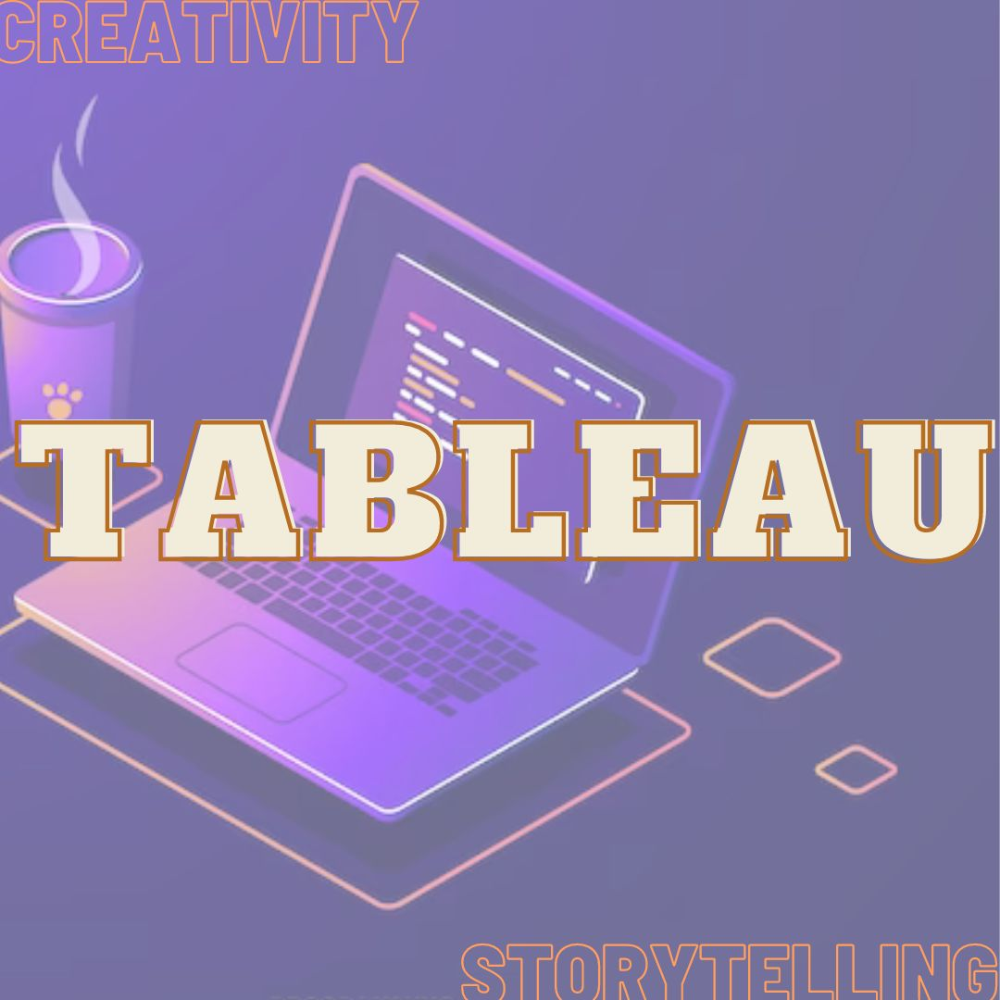
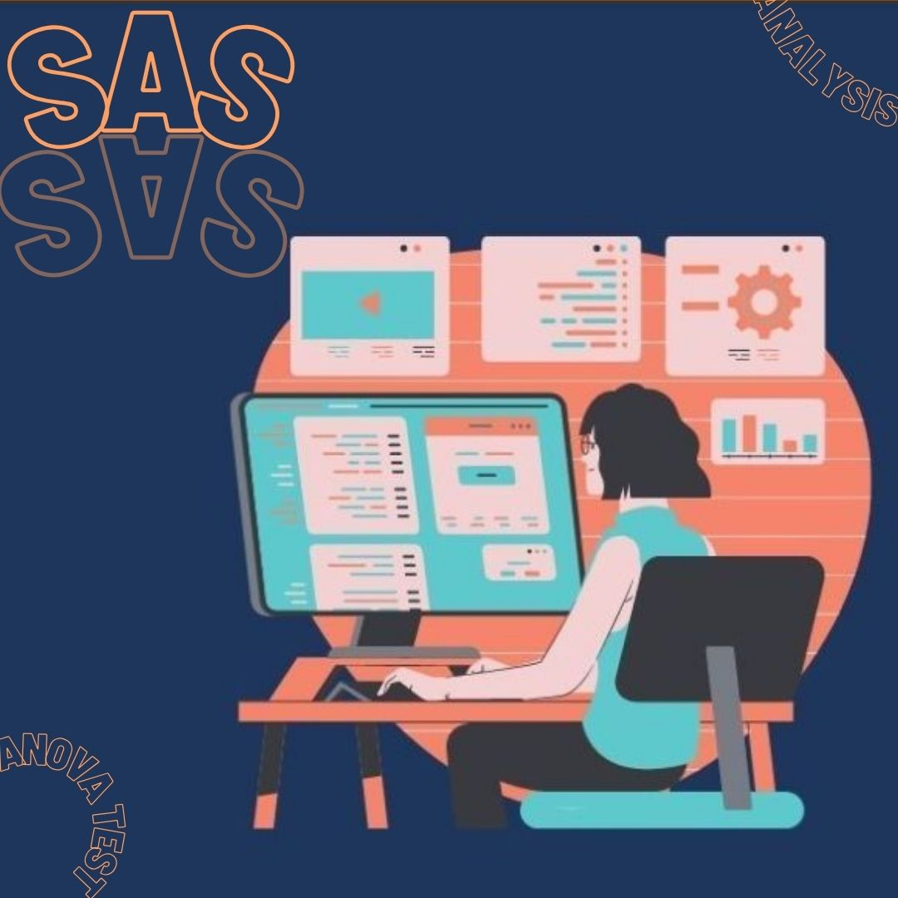

Trick or Treat with Tableau
"Unlocking the secrets of Super Market Grocery Sales was a visual journey, Armed with Tableau's magic, I conjured interactive dashboards and insightful visualizations from a treasure trove of over 30,000 records. Analyzing the pulse of aggregated data and key performance indicators, I unveiled valuable insights,
turning mundane numbers into a captivating story of business intelligence and strategic success.
Go to my Github

Streaming on SAS
"Explore the world of human resource analytics in my project! Using SAS Base, revealing patterns and relationships that shape workforce outcomes.
From meticulous data cleansing to advanced techniques like Linear Regression and ANOVA tests, this project showcases the transformative power of analytics in guiding strategic decisions.
Join me in decoding the stories within data points and navigating the intricate landscape of human resource insights!"
Go to my Github

Extra Fun with Excel
In the Udemy data realm, I wielded Excel's magic, crafting dynamic dashboards and pivot table tales. Charts danced with data, turning complexity into actionable insights.
This wasn't just analysis; it was storytelling, where Excel's art solved business puzzles, one visual at a time.
Go to my Github